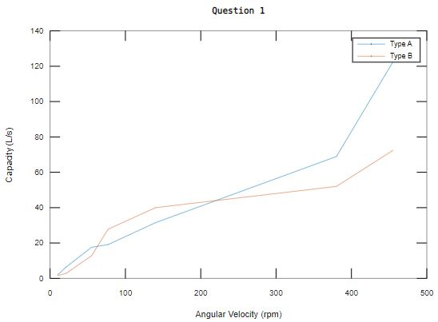
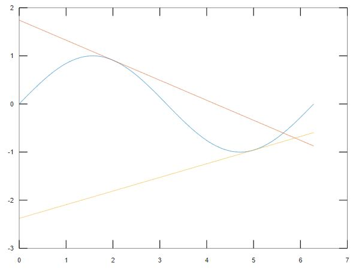

Lab Report
Individual Report
Due date: 3 March 2023, 23:59
Include: Code, figures, and anything you think it is important :)
Submit: PDF file only to Blackboard
Question 1
There are three sets of data. Plot the relatioship between the Angular Velocity and Capacity of Type A with Angular Velocity and Capacity of Type B.
Angular Velocity = [10, 22, 55, 77, 140, 380, 455];
Capacity of Type A = [2, 6.6, 17.6, 19.1, 31.5, 68.9, 122.4];
Capacity of Type B = [1.5, 3, 12.8, 27.8, 40, 52, 72.4];
Should have something similar to this:

Question 2
There are three datasets (Dataset A to C) as shown below.
- Find the relationship between values in each dataset (Dataset A to C).
- Generate same datasets with a for loop function and randomly generate one more dataset (Dataset D).
- Visualize Dataset A with a line plot, Dataset B with a bar chart, Dataset C with a pie chart, and Dataset D with a histogram chart.
Requirement: Show clearly which dataset you are using in each graph. Use only ONE for loop function to generate all the dataset.
Dataset A:
0.8415, 0.9093, 0.1411, -0.7568, -0.9589, -0.2794, 0.6570, 0.9894, 0.4121, -0.5440
Dataset B:
4, 8, 12, 16, 20, 24, 28, 32, 36, 40
Dataset C:
4, 25, 64, 121, 196, 289, 400, 529, 676, 841
Dataset D:
% Randomly generate 10 values
Question 3
Gravity is ignored in this question.
Consider we have a simple mass spring system as shown below. Without a damper, the system keeps oscillating with a sine function
x = 5 * sin(10 *t).
The oscillation is visualized in 2D and 3D.
To stablize the system, we can add a damper. The displacement is converged with
x = 5 * sin(10 *t).*exp(-t) and the system becomes stable.
The oscillation is visualized in 2D and 3D.
Regenerate the same results.
- Determine the displacement and velocity functions.
- Plot the same graphs as shown above (4 graphs in total).
Question 4
Linearising a nonlinear function
To obtain a linear model of a nonlinear system, we assume the variables deviate slightly from an operating condition.
Taylor Series: a series expansion of a function about a point
Taylor Series: linear approximation
The linear approximation of the system (function) can be obtained using the tangent line.
f(x) ≈ f(x0) + f'(x0)(x - x0)
Nonlinear function: sine function
Linearise it at x
0 = pi and x
0 = 5
Plot the nonlinear function and the linearised functions.
Example:
